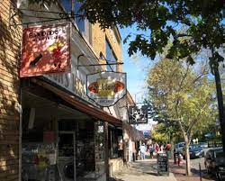
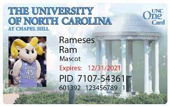

Now we've gotten to the Best Part. THE FOOD. Chapel hill is famous for its franklin street. A whole street lined up with restaurants, bars, convenice stores that stretches for what seems like forever.
The best part about the franklin street, is the fact that some restaurants actually accept flex on your one card. Its through an app called takeout. So you are in no way limited to dining hall food.
The list of food is extensive but you can find those on the internet with REAL reviews. Also, try asking for recommmendations on campus, its a great way to make conversationa and make a new friend.